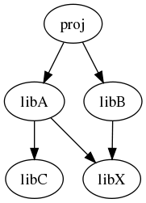

This configuration of dependencies should be enough to uncover many of the edge cases.

proj is a project that might not be hosted at ryppl. libA, libB, libC, and libX are ryppl library projects.
At the top level of each ryppl project sits a directory called .ryppl, containing METADATA file as described in PEP 376.
The developer of libA has a .ryppl/METADATA file to his project at the top level:
Requires-Dist: libX (>=1.0,!=3.0,<=3.1)
Requires-Dist: libC
This specifies a dependency on a version of libX numbered 1.0 through 3.1, excluding 3.0 (or the 3.0.x series if versions of libA have three numeric parts).
Note
A well formed version number has the following format:
N.N[.N]+[{a|b|c|rc}N[.N]+][.postN][.devN]
where the only mandatory parts are the initial N.N.
This is the same format accepted for Python versioning schema, see PEP 386 for a thorough explanation. This choice covers the vast majority of cases (up to development, post-release versions) and allows for comparisons.
libB has a similar .ryppl/METADATA file:
Requires-Dist: libX:2.0-2.5,3.0
The person developing proj does:
~/proj% ryppl get libA libB
This will pull down the latest release of libA, libB, and libC and version 2.2 of libX, since it's the latest version compatible with both the latest libA and libB.
Alternatively, the developer of proj can have his own .ryppl/METADATA file:
Requires-Dist: libA
Requires-Dist: libB
and simply execute:
~/proj% ryppl
In case of conflicts,where the latest libA and libB are not compatible with any common version of libX, the user should be offered options
The default assumption should be that later versions don't break backward-compatibility, so a project that depends on v2.0 of libX will also work with v3.0.
Now we'll look at a number of things that might happen. A set of changes to be applied will be referred to here as a “patch,” even if not expressed or completely expressible as a patch file.
Library developer propagates a patch “downstream” (from library dependency to dependent project). Propagation can either be
Downstream patch propagation will cause some automatic source merging when downstream subscribers. Some of the (likely) working tree states being employed by users may be known to the upstream developer, e.g. the HEADs of any release branches are likely candidates.
Ideally we'd like to (optionally) automatically test compatibility of any patch with these known downstream states at two levels—a test for a clean merge or a full regression test—but these don't seem like “priority 1” features.
Regardless, downstream merges will sometimes fail, or fail to work. In these cases, it is crucial that downstream users' working tree states are restored. Such failures should be automatically reported upstream in a way that allows the upstream developer to correct them.
The developer of proj patches one of the libraries on which proj depends.
The change will be checked into the user's repository, and persists there until integrated upstream. Upstream integration works as follows:
This should all happen without modification of user's patch.
If developer wants to make modifications before merging back into a release branch, she is free to do so, but this should be done as follow-up checkins on the patch branch, and requests for a pull+update+test should be sent automatically to user.
Merge to release branch should similarly automatically notify user, with the option for automatic or manual switching of user's working tree state to the release branch.